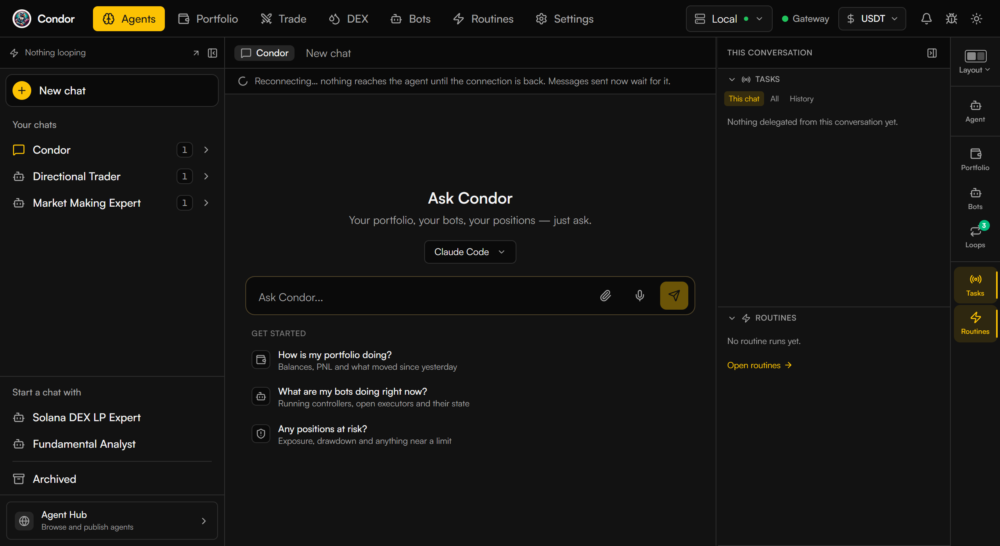

Dashboard as the Default Home Page
Open Condor on a page made for a trader's routine: how the portfolio changed, what the bots are doing, what the market is doing, the top news. Today the home page is a chat with agents. The chat stays, one step further out.
Why
What a trader looks at most of the time is how much the portfolio has changed, what the status of the bots is, what is happening in the market, the top news and a few BTC statistics. The team's estimate is that this is about 99% of the time, and that chatting with an agent to ask a question is the other 1%. This is an estimate, not a measurement: Condor has no usage analytics yet.
A chat page does not match a trader's normal routine at any time of day. It can also be intimidating for beginners, who may never even click the Portfolio tab. The product owner felt this as a trader using Condor, and still does.
Today's home page is agent-centric, closer to a developer's tool. It would serve traders better if it were Portfolio, Market and Trader centric, with the chat one step away.
Before
What is missing for a trader: no balance, no profit or loss, nothing about the market, no news. All of it sits behind other tabs or behind a question typed into the chat.

After
The home page shows the trader's funds: balances and P&L status, including daily and hourly. This is what most traders care about above everything else. Then it shows the BTC chart and the top news, which directly affect those funds. Then it shows the status of the trader's live agents.

Note: Image above is a mock with sample data.
Notes
- The contents are for the team to fine-tune and decide. Suggestions are welcome.
- The layout and design are not final. They will be redesigned by Sofi.
Rollout
Not built yet. There is no code PR for this proposal. This page only proposes. If the direction is approved, the work would be:
| Piece | Status |
|---|---|
A Dashboard page, and / opening it instead of the chat home | Not built |
| Data for funds, profit and loss, live agents and BTC price | Not built, data to decide |
| BTC Meter and Top News data | Not built, data to decide |
| A way into the chat from the Dashboard | Not built, to decide |
| Empty state for a new user, and setup ending on the Dashboard | Not built |
Decision requested
Approve the direction: the Dashboard, not the chat, becomes the default home page, with its contents decided by the team and its design by Sofi. Nothing is built, so no PR is waiting.
Refinement log
Newest first. Add a row for every change that comes out of review.
| Date | Change | Reason / source | PR |
|---|---|---|---|
| 2026-11-28 | The Live Agents cards gain two rows after Volume: Agent Started (25-Nov-26 at 12:55 pm) and Total Runtime (3D 2H 30Mins), with a different value for each card (GateForum 26-Nov-26 at 9:40 am / 2D 5H 45Mins; JEV 28-Nov-26 at 12:55 pm / 2H 30Mins); the mock's sample "now" is 28-Nov-26 at 3:25 PM, which the runtimes add up to; the picture is retaken on the current rail build at 1280 by 1400 at 2x (2560 by 2800) | User request. Sample data only: Condor does not report an agent's start time or runtime yet | #13 |
| 2026-11-28 | The After picture is retaken on the updated left rail (Dashboard, Agents, Labs, then Settings and the avatar); the page content is the same | User review; PR #3 at b5a1bd0d | #13 |
| 2026-11-27 | Revised after review: the Why is now three short paragraphs; the page is trimmed to Why, Before, After, Notes, Rollout and Decision; the Before keeps only what is missing for a trader and has no caption; the After text now explains what the page is for instead of describing the picture, and its note is shortened; the table under the picture is removed; the picture gains a "Live Agents" row of three cards (Stable Churn, GateForum, JEV) with sample data, and is retaken at 1280 by 1300 at 2x (2560 by 2600); the mock source is updated to match | User review of the proposal | #13 |
| 2026-11-27 | First version: reasons for the change, the current Agents home as "Before", a mock Dashboard with sample data on the real rail and top bar as "After" (the mock is kept in assets/dashboard-mock.html), notes, and a statement that nothing is built | User request for a proposal on the Dashboard as the default home page. The reference pictures the user mentioned did not arrive, so the layout followed the written list | #13 |